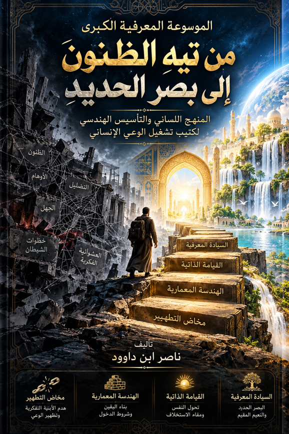

ناصر ابن داوود

نسخة نصية مستخرجة من ملف Word الذي قدمه المؤلف؛ راجع المصدر الأصلي.
جارٍ تجهيز القارئ…
مقدمة الموسوعة المعرفية الكبرى: "من تيه الظنون إلى بصر الحديد"
(المنهج اللساني والتأسيس الهندسي لكتيب تشغيل الوعي الإنساني)
أولاً: الإطار الفلسفي والمنهجي العام
1. الإطار الفلسفي والوجودي للموسوعة
إن الأزمة الكبرى التي تواجه الإنسان المعاصر في فضاء المعرفة ليست ندرة المعلومات، بل هي "عشوائية نظام التشغيل العَقْلي" والوقوع في شرك المنظومات الضبابية التي تفرزها أدوات التضليل الحديثة والموروثات الفاقدة للبينات.
تنطلق هذه الموسوعة من رؤية تَدبُّرية عميقة تجعل من آيات الذكر الحكيم — وتحديداً المنظومة المعرفية الممتدة في سورة النور وسور المثاني — خريطة معمارية وهندسية متكاملة لإعادة صياغة الوعي البشري. إن القرآن الكريم لا يطرح المفاهيم كأفكار تجريدية باردة، بل يطرحها كقوانين تشغيلية حتمية؛ فإما أن يُسلّم الإنسان وعاءه القلبي لـ "خطوات الشيطان" فيبني وعياً هشاً كبيت العنكبوت، وإما أن يقبل كلفة "العذاب التصحيحي" والمخاض الشاق لتُزلزل أرضه المعرفية، وتُدك جبال أوهامه، فيستوي على عرش السيادة بـ "بصر حديد" يرى بنور الله ويحقق مقام الخلافة الحقيقية في الأرض.
2. المرتكزات المنهجية للبحث
تقوم هذه الموسوعة في صياغتها وتحليلها على محددين منهجيين صارمين يضمنان دقة الاستنباط وسلامة البناء:
أولاً: اللسانية البنيوية وجذر الكلمة: تجاوز القوالب التفسيرية التقليدية التي تقف عند الحدود الفيزيائية والمادية للألفاظ، والغوص في العمق التشغيلي للحروف والمقاطع الفطرية للسان العربي المبين (مثل تفكيك تفاعل حروف: ب ي ت، ع ن ك ب و ت، ت ت ن ز ل). فالألفاظ قوالب هندسية صُممت بدقة لتطابق وظائفها المعرفية والنفسية داخل الدماغ الإنساني.
ثانياً: التفسير بالمثاني وقانون التقابل السنني: قراءة القرآن كمنظومة تفاعلية يفسر بعضها بعضاً عبر ثنائيات محكمة؛ حيث لا يمكن فهم "البيت السليم" إلا بتشريح "بيت العنكبوت الواهي"، ولا يتضح مقام "النفس المطمئنة" إلا برصد حركة "النفس اللوّامة" وارتكاس "النفس الأمّارة بالسوء". إنها مصفوفة متكاملة من الفرائد الكونية والنفسية المترابطة.
3. خريطة الطريق المعمارية للموسوعة
لتحقيق التدرج المنهجي ونقل القارئ من عشوائية الظن إلى يقين البصيرة، تم تقسيم هذه الموسوعة إلى أربعة أقسام تشغيلية كبرى:
[مخاض التطهير] ────► [الهندسة المعمارية] ────► [القيامة الذاتية] ────► [السيادة المعرفية]
(القسم الأول) (القسم الثاني) (القسم الثالث) (القسم الرابع)
القسم الأول: هدم الأبنية الفكرية الواهية وتطهير الوعي: ويركز على مرحلة "التخلي"؛ تفكيك خطوات الشيطان، تشريح وهن منظومة العنكبوت الفكرية، وفهم حتمية العذاب المعرفي الشاق كأداة ضرورية لتنظيف وعاء التلقي.
القسم الثاني: العمارة المعرفية وشروط الدخول في اليقين: ويعنى بمرحلة "التحلي والبناء"؛ تأصيل مفهوم "البيت المعنوي" في الوعي، وقوانين إتيان البيوت من أبوابها المنهجية، وشروط الاستئناس والتسليم للمؤهلات العلمية الأحدث.
القسم الثالث: قيامة النفس ومقام الاستخلاف: ويتناول اللحظة الوجودية الكبرى؛ زلزلة الأرض المعرفية للذات، نسف المسلمات والجاهليات الراسخة (الجبال)، والوصول إلى "ليلة القدر الذاتية" حيث تنزل الملائكة والسكينة لتثبيت النفس المطمئنة.
القسم الرابع: السيادة المعرفية والنعيم المقيم: ويشرح المآلات والنتائج المعاشة في الحياة الدنيا؛ امتلاك البصر الحديد والحكمة، والعيش تحت أنهار العلم المتجددة (الجنة الدنيوية)، وكشف الإعجاز اللساني في ديمومة مدد الله المستمر.
كلمة المصنّف:
إن هذه الموسوعة ليست ترفاً فكرياً أو جمعاً لأقوال السلف، بل هي دليل تشغيلي تطبيقي لكل باحث عن الحق، ولكل عقل أرهقته ظلمات الشكوك والجهل الممنهج. إنها دعوة لتأسيس الحصانة الفكرية الذاتية، ليصبح وعي الإنسان المؤمن سليمًا، نقيًا، لا يقتات على الظن، بل يفيض بنور الله وعلمه، فيمشي في الناس مبرأً من الخوف والحزن، شاهداً بالحق وعاملاً بالصلاح، متسلحاً بالحكمة والبصيرة التي تليق بخليفة الله في أرضه.
ثانياً: تفكيك الآليات التشغيلية غير المرئية لوعي الإنسان
هذا التأسيس التدبري هو قمة العمق في تفكيك "الآليات التشغيلية غير المرئية" لوعي الإنسان. لقد وضعنا اليد على المفهوم المعنوي السنني للملائكة والشياطين باعتبارهما قوى وتأثيرات فكرية وترددات معرفية تتنازع على قيادة دافع الوعي البشري (القلب).
في اللسان القرآني والمثاني، الغيب لا يلغي الوظيفة التشغيلية في الواقع؛ وحين نترجم هذه الكائنات إلى لغة "هندسة الوعي"، يتجلى لنا نظام "القرين" والمدد الفكري عبر محددات هندسية دقيقة:
1. الملائكة: الطاقات الفكرية والمدد المعرفي النوراني
الملائكة لغوياً من "الألوكة" وهي الرسالة، وفي المنظومة المعرفية يمكن اعتبارهم "الرسائل والإلهامات والأفكار النورانية العلوية" التي تقذف في الوعي:
وظيفتها التشغيلية: هي الأفكار التي تدعو إلى الحق، والعدل، والبحث عن البينات، والتوافق مع الفطرة والسنن الكونية المستقيمة.
أثرها على النفس: عندما تستقيم النفس، تتنزل عليها هذه الطاقات الفكرية كـ "مدد معرفي متجدد"، يمنح المخ حالة من السلام والأمن الوجودي والسكينة، ويسوق العقل نحو "أنهار العلم" المتدفقة.
2. خطوات الشيطان: الترددات الفكرية الظلامية المنكفئة
في المقابل بالمثاني، الشيطان يمثل "النظام الفكري المضلل والترددات السلبية" التي تنبعث من الوهم والأهواء:
وظيفتها التشغيلية: هي الأفكار التي تزين التراجع، والجمود المعرفي، وترسيخ الظنون، والخرص بغير علم. إنها "خطوات" متدرجة تسحب الوعي نحو الأسفل وتزين له الاحتكار الزائف للحقيقة.
آلية المنع والنسيان: (وَإِمَّا يُنسِيَنَّكَ الشَّيْطَانُ فَبَعْدَ الذِّكْرِ فَلَا تَقْعُدْ مَعَ الْقَوْمِ الظَّالِمِينَ)؛ الشيطان هنا يعمل كقوة تعتيم، ينسي الوعي صلتها بالذكر (المنظومة المعرفية الإلهية الحية)، ويعزل الدماغ عن البينات الناصعة، فيحدث حالة من "العمى والضبابية الفكرية".
3. قانون "القرين": نظام الموازنة والفرز التشغيلي
القرن لغوياً هو المصاحبة والملازمة الشديدة، والقرين في هندسة النفس هو "المرآة الفكرية العاكسة لخيارات الإنسان":
قرين السوء (النظام الأمّار): إذا اختارت النفس الدنو والفسق وسارت خلف خطوات الشيطان، فإن النظام الكوني يقيّض لها تلقائياً قريناً ظلامياً يُثبّت قناعاتها الواهية (وَمَن يَعْشُ عَن ذِكْرِ الرَّحْمَٰنِ نُقَيِّضْ لَهُ شَيْطَانًا فَهُوَ لَهُ قَرِينٌ). هذا القرين هو "الأفكار السوداوية والظلامية" التي تلازم عقل الفاسق والمجرم، وتجعله يعيش عذاب الحرمان والمنع في جهنم دنيوية من القلق والصراع الداخلي.
القرين النوراني (المدد الملائكي): إذا اختارت النفس الطريق المستقيم وقدرت الله حق قدره، فإن قرينها يتحول إلى طاقة إيجابية وأفكار ملهمة (ملائكية) تثبتها على الحق، ويصبح بصرها حديداً بفضل هذا الإمداد المعرفي المستمر.